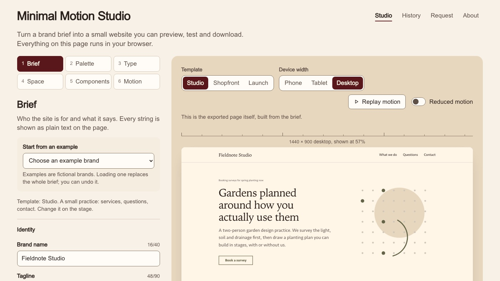

TypeScript · Design system · 2026-10
Minimal Motion Studio
A brand brief becomes a small website: contrast-checked OKLCH tokens, type and spacing scales, Web Animations motion, a three-width preview, and an export that builds byte-identical to the preview with no dependencies.

- Commits
- 7
- Last push
- 2026-10-22
- Created
- 2026-10-22
- Languages
- TypeScript 61%, Python 24%, CSS 9%
Example brands are fictional. The studio is deterministic: the same brief always gives the same files. AI-proposed briefs are an owner-only workflow that needs an inference secret, and as of this release none is configured, so no AI-proposed generation has run.
01 / The problem
Turning a brand into a website usually means a designer hand-picks colours, someone checks contrast at the end (if at all), and the exported code depends on a build chain that rots within a year. The question here is whether a structured brief can be compiled into a site deterministically: every colour pairing checked on the background it actually sits on, motion that respects reduced-motion settings, and an export anyone can rebuild with Node alone and get the same bytes.
02 / What I built
A browser-based studio, a shared zero-dependency build core and a GitHub-native run harness:
- One brief contract (JSON Schema 2020-12), validated by Ajv in the browser and jsonschema in the harness.
- Tokens: OKLCH palette derivation with lightness-only contrast adjustments (culori), type and spacing scales, radii and motion timing; seven system font voices and four motion presets.
- Composition into a source package with one text escaper, three templates and an original SVG motif.
- A zero-dependency build shared by the studio and the exported
build.mjs: tokens CSS fromtokens.json, a contrast re-check, and a hash-based CSP. - A deterministic zip and a CLI for Actions (
run,verify-candidate,compose). - The studio: preview at phone, tablet and desktop widths, reduced-motion preview, download, import and export of briefs, all in browser memory.
03 / How it was built
- 01
Define the brief as a schema
Everything the studio can make is described by
schemas/request.schema.json: brand name, voice, palette seed, templates, up to six items and five questions. The same schema validates in the browser (Ajv) and in the harness (jsonschema), so a brief that passes in one place passes in the other. - 02
Derive a palette and check every pairing where it sits
Colours are derived in OKLCH. Each text-on-background pairing is checked against the background it will actually sit on, and when a pairing fails only lightness is adjusted, so hue and chroma stay the brand's. Every adjustment is listed in the studio and in
adjustments.json. - 03
Compose the site with one escaper
Tokens, scales, one of three templates and an original SVG motif are composed into a source package. A single text escaper handles every string that reaches HTML, which keeps the hash-based Content Security Policy honest.
- 04
Build the same way in the studio and in the export
build-core.jshas no dependencies and is used both by the studio's preview and by the exported package'sbuild.mjs. Change a colour intokens.jsonand rebuild: every use changes, and the build refuses a value that breaks a contrast pairing.unzip fieldnote-studio-site.zip -d site && cd site npm run build # Node 18+, no install: writes dist/index.html - 05
Preview at three widths, with motion that can be turned off
The studio previews the page at phone, tablet and desktop widths and offers a reduced-motion preview. Motion runs on the Web Animations API with four presets; the collapse animation keeps the answer painted while folding only where
::details-contentis supported. - 06
Publish a generation run through GitHub and review it in a real browser
A Generation run request issue makes Actions compose the package independently, build it, and review it with Playwright and axe at 390, 768 and 1440 px. The result is kept on the
statebranch with a release record.
04 / Results
| Check (committed sample brief, a fictional garden design studio) | Result |
|---|---|
| Contrast pairings passing | 16 / 16 |
| axe violations at 390, 768 and 1440 px | 0 |
| Exported package vs studio preview | byte-identical |
| Colour adjustments needed by the dark launch example | 2 |
| Lighthouse accessibility / best practices / SEO | 1.0 / 1.0 / 1.0 |
| Lighthouse performance, phone / desktop | 0.96 / 1.0 |
| LCP, phone / desktop | 1.8 s / 0.48 s |
| CLS | 0 |
| Defects found by independent review, all fixed as regression tests | 16 (5 major, 11 minor) |
Lighthouse figures are medians of three runs on the live site with default simulated throttling.
05 / What I'd do next
- Use the derived success, warning and danger roles in the templates (they are checked today but unused).
- Add image handling and more than three templates.
- Configure an inference secret so the owner-only AI-proposed brief workflow can run, with its result recorded in the release.